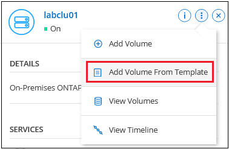

Versionshinweise
Versionshinweise
Verwalten von Clustern, die mit einem Connector erkannt wurden
 Änderungen vorschlagen
Änderungen vorschlagen
Wenn Sie ein lokales ONTAP-Cluster mithilfe eines Connectors erkannt haben, können Sie Volumes aus der Standardansicht erstellen, System Manager in der erweiterten Ansicht verwenden und BlueXP Datenservices aktivieren.
Auf dem Bildschirm sollte das Symbol der Arbeitsumgebung für einen Cluster, den Sie mit einem Konnektor erkannt haben, ähnlich wie das folgende aussehen:

Wenn eine Arbeitsumgebung direkt erkannt wurde, enthält das Symbol „direkt“ das Wort „direkt“.
Erstellen Sie FlexVol Volumes in der Standardansicht
Nachdem Sie den lokalen ONTAP-Cluster von BlueXP mithilfe eines Connectors erkannt haben, können Sie die Arbeitsumgebung für die Provisionierung und das Management von FlexVol Volumes öffnen.
Volumes erstellen
Mit BlueXP können Sie NFS- oder CIFS-Volumes auf vorhandenen Aggregaten erstellen. Neue Aggregate können auf einem lokalen ONTAP-Cluster nicht über die BlueXP-Standardansicht erstellt werden. Zum Erstellen von Aggregaten müssen Sie die Ansicht „Erweitert“ verwenden.
Mit der BlueXP Funktion „Templates“ können Sie Volumes erstellen, die für bestimmte Workloads, wie Datenbanken oder Streaming-Services, optimiert sind. Wenn Ihr Unternehmen Volume-Vorlagen erstellt hat, die Sie verwenden sollten, folgen Sie den Anweisungen Diesen Schritten ausführen.
-
Wählen Sie im Navigationsmenü die Option Storage > Canvas aus.
-
Wählen Sie auf der Seite Bildschirm den On-Premises-ONTAP-Cluster aus, auf dem Sie Volumes bereitstellen möchten.
-
Wählen Sie Volumes > Volume Hinzufügen.
-
Befolgen Sie die Schritte im Assistenten, um das Volume zu erstellen.
-
Details, Schutz & Tags: Geben Sie Details zum Volume wie Name und Größe ein, wählen Sie eine Snapshot-Richtlinie aus und geben Sie ggf. Volume-Tags an.
Einige der Felder auf dieser Seite sind selbsterklärend. In der folgenden Liste werden die Felder beschrieben, für die Sie möglicherweise Hinweise benötigen:
Feld Beschreibung Größe
Die maximale Größe, die Sie eingeben können, hängt weitgehend davon ab, ob Sie Thin Provisioning aktivieren, wodurch Sie ein Volume erstellen können, das größer ist als der derzeit verfügbare physische Storage.
Snapshot-Richtlinie
Eine Snapshot Kopierrichtlinie gibt die Häufigkeit und Anzahl der automatisch erstellten NetApp Snapshot Kopien an. Bei einer NetApp Snapshot Kopie handelt es sich um ein zeitpunktgenaues Filesystem Image, das keine Performance-Einbußen aufweist und minimalen Storage erfordert. Sie können die Standardrichtlinie oder keine auswählen. Sie können keine für transiente Daten auswählen, z. B. tempdb für Microsoft SQL Server.
-
Protokoll: Wählen Sie das Protokoll für das Volume (NFS, CIFS oder iSCSI) und legen Sie dann die Zugriffskontrolle oder Berechtigungen für das Volume fest.
Wenn Sie sich für CIFS entscheiden und ein Server noch nicht eingerichtet ist, werden Sie von BlueXP aufgefordert, einen CIFS-Server entweder über Active Directory oder eine Arbeitsgruppe einzurichten.
In der folgenden Liste werden die Felder beschrieben, für die Sie möglicherweise Hinweise benötigen:
Feld Beschreibung Zugriffssteuerung
Eine NFS-Exportrichtlinie definiert die Clients im Subnetz, die auf das Volume zugreifen können. Standardmäßig gibt BlueXP einen Wert ein, der Zugriff auf alle Instanzen im Subnetz bietet.
Berechtigungen und Benutzer/Gruppen
In diesen Feldern können Sie die Zugriffsebene für eine SMB-Freigabe für Benutzer und Gruppen (auch Zugriffssteuerungslisten oder ACLs) steuern. Sie können lokale oder domänenbasierte Windows-Benutzer oder -Gruppen oder UNIX-Benutzer oder -Gruppen angeben. Wenn Sie einen Domain-Windows-Benutzernamen angeben, müssen Sie die Domäne des Benutzers mit dem Format Domain\Benutzername einschließen.
-
Nutzungsprofil: Wählen Sie, ob Sie Storage-Effizienzfunktionen auf dem Volume aktivieren oder deaktivieren möchten, um die benötigte Gesamtmenge an Speicherplatz zu verringern.
-
Review: Überprüfen Sie Details über das Volumen und wählen Sie dann Add.
-
Erstellen Sie Volumes aus Vorlagen
Wenn Ihr Unternehmen On-Premises ONTAP Volume-Vorlagen erstellt hat, damit Sie Volumes implementieren können, die für die Workload-Anforderungen bestimmter Applikationen optimiert sind, befolgen Sie diese Schritte in diesem Abschnitt.
Die Vorlage sollte Ihnen die Arbeit erleichtern, da bestimmte Volume-Parameter bereits in der Vorlage definiert werden, z. B. Festplattentyp, -Größe, -Protokoll, -Snapshot-Richtlinie usw. Wenn ein Parameter bereits vordefiniert ist, können Sie einfach zum nächsten Volume-Parameter springen.

|
NFS- oder CIFS-Volumes können nur mit Vorlagen erstellt werden. |
-
Wählen Sie auf der Seite Bildschirm den On-Premises-ONTAP-Cluster aus, auf dem Sie Volumes bereitstellen möchten.
-
Wählen Sie
 > Volumen Aus Vorlage Hinzufügen.
> Volumen Aus Vorlage Hinzufügen.
-
Wählen Sie auf der Seite Select Template die Vorlage aus, die Sie zum Erstellen des Volumes verwenden möchten, und wählen Sie Next aus.

Die Seite Define Parameters wird angezeigt.

Hinweis: Sie können das Kontrollkästchen nur-Parameter anzeigen aktivieren, um alle Felder anzuzeigen, die von der Vorlage gesperrt wurden, wenn Sie die Werte für diese Parameter sehen möchten. Standardmäßig werden diese vordefinierten Felder ausgeblendet. Es werden nur die Felder angezeigt, die Sie ausfüllen müssen.
-
Im Bereich context wird die Arbeitsumgebung mit dem Namen der Arbeitsumgebung ausgefüllt, mit der Sie begonnen haben. Sie müssen das Storage VM und Aggregat auswählen, wo das Volume erstellt wird.
-
Fügen Sie Werte für alle Parameter hinzu, die nicht hartcodiert sind.
-
Wählen Sie Run Template, nachdem Sie alle für dieses Volume benötigten Parameter definiert haben.
BlueXP stellt das Volume bereit und zeigt eine Seite an, so dass Sie den Fortschritt sehen können.

Dann wird das neue Volume zur Arbeitsumgebung hinzugefügt.
Wenn außerdem eine sekundäre Aktion in der Vorlage implementiert wird, beispielsweise durch die Aktivierung von BlueXP Backup und Recovery auf dem Volume, wird ebenfalls ausgeführt.
Wenn Sie eine CIFS-Freigabe bereitgestellt haben, erteilen Sie Benutzern oder Gruppen Berechtigungen für die Dateien und Ordner, und überprüfen Sie, ob diese Benutzer auf die Freigabe zugreifen und eine Datei erstellen können.
FlexGroup Volumes erstellen
Die BlueXP API kann zur Erstellung von FlexGroup Volumes genutzt werden. Ein FlexGroup Volume ist ein Scale-out-Volume, das eine hohe Performance zusammen mit automatischer Lastverteilung bietet.
Administration von ONTAP mithilfe der erweiterten Ansicht (System Manager)
Wenn Sie erweitertes Management eines lokalen ONTAP-Clusters durchführen möchten, können Sie dies mit ONTAP System Manager durchführen. Dabei handelt es sich um eine Managementoberfläche, die zusammen mit einem ONTAP System bereitgestellt wird. Die System Manager Schnittstelle ist direkt in BlueXP integriert, sodass Sie BlueXP nicht für erweitertes Management verlassen müssen.
Diese erweiterte Ansicht ist als Vorschau verfügbar. Wir planen, diese Erfahrungen weiter zu verbessern und in zukünftigen Versionen Verbesserungen hinzuzufügen. Bitte senden Sie uns Ihr Feedback über den Product-Chat.
Funktionen
Die erweiterte Ansicht in BlueXP bietet Ihnen zusätzliche Verwaltungsfunktionen:
-
Erweitertes Storage-Management
Managen von Konsistenzgruppen, Shares, qtrees, Quotas und Storage-VMs
-
Netzwerkmanagement
Managen Sie IPspaces, Netzwerkschnittstellen, Portsätze und ethernet-Ports.
-
Ereignisse und Jobs
Anzeige von Ereignisprotokollen, Systemwarnungen, Jobs und Prüfprotokollen.
-
Erweiterte Datensicherung
Sicherung von Storage VMs, LUNs und Konsistenzgruppen
-
Host-Management
Richten Sie SAN-Initiatorgruppen und NFS-Clients ein.
Unterstützte Konfigurationen
Das erweiterte Management über System Manager wird von lokalen ONTAP Clustern mit 9.10.0 oder höher unterstützt.
Die Integration von System Manager wird in GovCloud Regionen oder Regionen ohne Outbound-Internetzugang nicht unterstützt.
Einschränkungen
Einige System Manager-Funktionen werden bei lokalen ONTAP-Clustern nicht unterstützt, wenn Sie die erweiterte Ansicht in BlueXP verwenden.
Verwenden Sie die erweiterte Ansicht
Öffnen Sie eine lokale ONTAP-Arbeitsumgebung, und wählen Sie die Option Erweiterte Ansicht.
-
Wählen Sie auf der Seite Bildschirm den On-Premises-ONTAP-Cluster aus, auf dem Sie Volumes bereitstellen möchten.
-
Wählen Sie oben rechts zur erweiterten Ansicht wechseln.

-
Wenn die Bestätigungsmeldung angezeigt wird, lesen Sie sie durch und wählen Sie Schließen.
-
Verwenden Sie System Manager zum Verwalten von ONTAP.
-
Falls erforderlich, wählen Sie zur Standardansicht wechseln, um zum Standardmanagement über BlueXP zurückzukehren.

Holen Sie sich Hilfe mit System Manager
Wenn Sie Hilfe bei der Verwendung von System Manager mit ONTAP benötigen, finden Sie unter "ONTAP-Dokumentation" Schritt-für-Schritt-Anleitungen. Hier sind einige Links, die helfen könnten:
Bereitstellung von BlueXP Services
BlueXP Datenservices lassen sich in Ihren Arbeitsumgebungen aktivieren, um Daten zu replizieren, Daten zu sichern, Daten-Tiers zu verschieben und vieles mehr.
- Datenreplizierung
-
Daten zwischen Cloud Volumes ONTAP Systemen, Amazon FSX for ONTAP Filesystemen und ONTAP Clustern replizieren Unternehmen haben die Wahl zwischen einer einmaligen Datenreplizierung, mit der sie Daten in die und aus der Cloud verschieben können, oder einem regelmäßigen Zeitplan, der bei der Disaster Recovery oder der langfristigen Datenaufbewahrung helfen kann.
- Daten sichern
-
Sichern Sie Daten von einem lokalen ONTAP System auf kostengünstigen Objekt-Storage in der Cloud.
- Scannen, Zuordnen und Klassifizieren Sie Ihre Daten
-
Scannen Sie die On-Premises-Cluster Ihres Unternehmens, um Daten zuzuordnen, zu klassifizieren und private Informationen zu identifizieren. Auf diese Weise reduzieren Sie Sicherheits- und Compliance-Risiken, senken die Storage-Kosten und unterstützen Ihre Datenmigrationsprojekte.
- Tiering von Daten in die Cloud
-
Erweitern Sie Ihr Datacenter in die Cloud durch das automatische Tiering inaktiver Daten von ONTAP Clustern in Objekt-Storage.
- Aufrechterhaltung von Systemzustand, Uptime und Performance
-
Implementierung vorgeschlagener Korrekturmaßnahmen für ONTAP-Cluster, bevor es zu einem Ausfall oder Ausfall kommt.
- Identifizierung von Clustern mit geringer Kapazität
-
Ermitteln Sie Cluster mit geringer Kapazität, prüfen Sie Cluster auf aktuelle und prognostizierte Kapazität und vieles mehr.